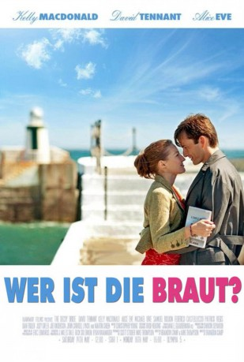

#976 Wer ist die Braut?
Alternativ: The Decoy Bride
 
 IMDB-Wertung: 6.2 / 10
IMDB-Wertung: 6.2 / 10  Metascore: 42
Metascore: 42 
Lara Tyler ist der angesagteste Star in Hollywood. Niemand darf erfahren, dass sie ihren Liebsten, den Schriftsteller James, in einer geheimen Zeremonie auf der entlegenen schottischen Insel Hegg ehelichen will. Weil Presse und Paparazzi aber das Gras wachsen hören, will man die Bluthunde mit einem Trick täuschen: Die ansässige Schönheit Katie, der gerade erst das Herz gebrochen wurde, soll die Medien als Ersatzbraut auf die falsche Fährte locken. Nur dumm, dass James sein Herz an sie verliert.
Jahr: 2011
Dauer: 89 Minuten
FSK:
Land: England Studio: Sunfilm EntertainmentTonspuren:
Untertitel: Deutsch,
Auflösung: 1080p (1920x800) Größe: 5509 MB
Genre: Komödie, Drama, Liebe
Regisseur: Sheree Folkson
Drehbuch: Neil Jaworski, Sally Phillips, Sally Phillips
Soundtrack: Julian Nott
Darsteller:
 David Tennant als James Neil Arber
David Tennant als James Neil Arber Alice Eve als Lara Tyler
Alice Eve als Lara Tyler- Hamish Clark als Angus
 James Fleet als William
James Fleet als William Dylan Moran als Charley
Dylan Moran als Charley Sally Phillips als Emma
Sally Phillips als Emma- Michael Urie als Steve Korbitz
- Federico Castelluccio als Marco Ballani
 Kelly Macdonald als Katie
Kelly Macdonald als Katie- Alisha Bailey als Suzelle
- Patrick Regis als Hollywood Minister
- Tina Gray als Elderly Woman
- Gil Kolirin als Security guard
- Ben Addis als Journalist 1
 Samuel Roukin als 2nd Paparazzo
Samuel Roukin als 2nd Paparazzo- Alex Childs als TV Host
- Achara Kirk als Tourist
- Sean Adames als (uncredited
- Vivienne Harvey als Additional voices , uncredited
- Ken Matthews als Islander , uncredited
- Joseph Andrew Mclean als Journalist , uncredited
- Danny Bage als Hotel Doorman
- Hannah Bourne als Chloe
- Maureen Beattie als Iseabail Nic Aoidh
- Muriel Barker als Mrs. Grainie
- Jeannie Fisher als Aileen
- Sally Howitt als Muireen
- Rony Bridges als Roan
- Matthew Chalmers als Callum
- Victoria Grove als Anais Anais
- William Owen als Journalist 2
- Calum MacNab als Journalist 3
- Ross Armstrong als 1st Paparazzo
 Robert Fyfe als Ancient Crofter
Robert Fyfe als Ancient Crofter- Maryann Turner als Ancient Crofter's Wife
- Tony Roper als Reverend McDonagh
- Hugh Junior Jamieson als Choir Boy
- Mike Burnie als Paparazzo , uncredited
- Leo Horsfield als Paparazzi , uncredited
- Keira McMillan als Wedding Guest , uncredited
- Rebeka Venters als Fan / Journalist , uncredited
Datei: X:\2011(N-Z)\Wer ist die Braut (2011, FSK, 1920x800).mkv seit 30.04.2015
Festplatte: HD 2011(G-Z)
 Es gibt insgesamt 132 Filme in der Gruppe '2011(N-Z)'
Es gibt insgesamt 132 Filme in der Gruppe '2011(N-Z)'